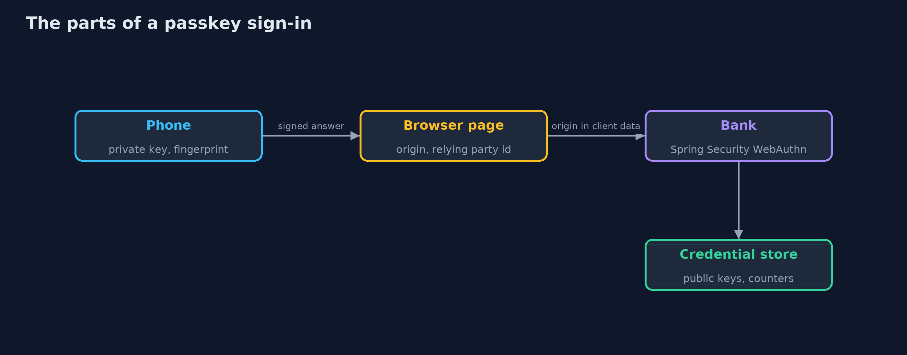
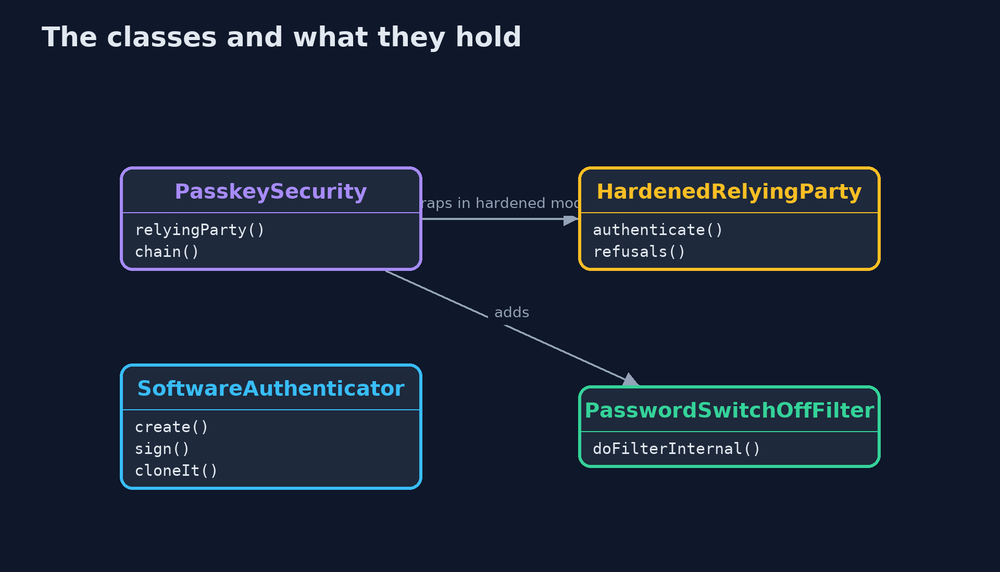
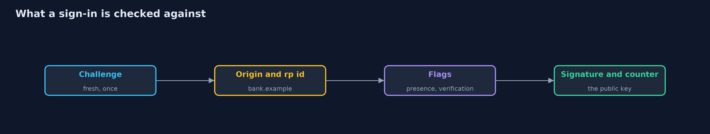
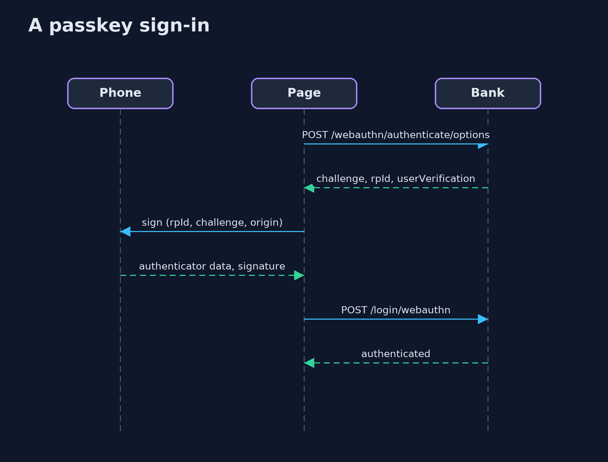

Passkeys with Spring Security
src/main/java/com/jk/explore/security/passkeysspring/
├── B64.java base64url without padding, the encoding WebAuthn uses for every binary value in its JSON
├── Cbor.java The few CBOR items that an attestation object and a COSE public key need: integers, byte strings, text strings and maps
├── HardenedRelyingParty.java What Spring Security leaves to the bank
├── PasskeyBrowser.java A customer's browser and the bank's page script as far as this lesson needs them: it keeps the session cookie, sends the CSRF token in a header, and does what {@code navigator.credentials.create} and {@code navigator.credentials.get} would do, by handing the bank's options to an authenticator and posting what comes back
├── PasskeyController.java The CSRF token for the page's script, which sends it back in a header on every post
├── PasskeySecurity.java The bank signs customers in with a password or a passkey
├── PasskeysApp.java
├── PasskeysSpringDemo.java Runs the bank's passkey story in five numbered acts against the real Spring Security WebAuthn endpoints, with an authenticator in software
├── PasswordSwitchOffFilter.java A customer with two passkeys has a way back in if one is lost, so the password, which can be phished, is switched off for them
├── Running.java The bank on a free loopback port
└── SoftwareAuthenticator.java A phone's authenticator in software
Spring Security's WebAuthn support, built on WebAuthn4J, creates and checks the challenges, keeps the public keys and refuses a look-alike origin, a replayed or foreign answer and a wrong key; but by default it only asks for user verification, never compares the signature counter, and leaves the password you keep beside the passkeys, so a bank has to wrap it to require a fingerprint and suspend a cloned passkey, and to switch passwords off once a customer has two passkeys.
The plain passkeys project builds a WebAuthn relying party from scratch. This one uses Spring Security 7.1's WebAuthn support (http.webAuthn(...), built on WebAuthn4J): the real registration and sign-in endpoints of a Spring Boot bank on a loopback port, with a phone's authenticator written in software that builds the same bytes a real one does, including the CBOR attestation object and the COSE key. It needs no Docker.
What it shows:
- Registering. A signed-in customer asks for options: a challenge of 32 random bytes, the relying party id bank.example, a user handle of 32 random bytes. The phone makes a P-256 key pair and returns a credential id and an attestation object with fmt: none. The bank stores a 77-byte COSE public key, a counter of 0 and a label, and nothing that can sign. An answer made with another key under ana's credential id is refused.
- Signing in. A fresh challenge each time, signed once; the same answer sent again, an answer for another browser's challenge, and an answer whose user-verified flag was switched on after signing are all refused.
- A look-alike site. bank-example.test gets nothing: the authenticator has no passkey for that name, the browser will not let it ask for bank.example, and a browser that skipped the rule still writes the page's real origin, which the bank refuses. The password typed into the same page works at the bank: a password can be phished, a passkey cannot.
- What the defaults leave open. Spring Security asks for user verification but accepts a touch, never compares the signature counter, so a phone restored from a backup and a clone both sign in. A HardenedRelyingParty wrapper requires the fingerprint and, after the signature proves the signer holds the key, suspends a passkey whose counter does not go up, even for the real phone. A synced passkey reports 0 and is let through.
- The bill. Ben's lost phone: the new laptop has no passkey, the security key works, and removing the phone's passkey (DELETE /webauthn/register/{id}) ends its use. The password still works beside the passkeys, so it is switched off for a customer with two.
Maps to: OWASP Top 10 (2025) A07 Authentication Failures · NIST SP 800-63B-4 (phishing-resistant authenticators) · W3C Web Authentication Level 2 · FIDO2 · CWE-308, CWE-1390.
The idea in everyday terms
A hotel key card that is cut for one hotel only. A copy of the hotel's records does not open a door, a card cut for another hotel opens nothing here, and a fake lobby can collect a guest's name and room number but not the card's secret.
The scenario
An online bank lets customers sign in with a password or a passkey. The demo registers Ana's phone, signs her in, shows a look-alike site failing, then compares Spring Security's defaults with a hardened bank, and ends with Ben's lost phone.
Run
./gradlew run
The demo tells the story in 5 acts, each printing exact numbers that the tests check:
| Act | What it shows |
|---|---|
| 1. Registering a passkey: the bank keeps only a public key | The bank sends a challenge, its relying party id and a user handle; the phone returns a credential id and an attestation object; the bank stores a COSE public key and a counter of 0, nothing that can sign. |
| 2. Signing in: a fresh challenge, signed once | Every sign-in gets a new challenge; the phone signs the authenticator data and the hash of the client data; a replayed answer, an answer for another browser's challenge and a flipped flag are refused. |
| 3. A look-alike site gets nothing it can use | A copy of the bank's page cannot get a passkey for the bank's name, the browser refuses the bank's relying party id for it, and the bank refuses the page's real origin; a typed password is not so lucky. |
| 4. User verification, and counters against copies | Spring Security's defaults accept a touch without a fingerprint, a counter going backwards and a clone; a wrapper requires user verification and suspends a passkey whose counter does not go up. |
| 5. The bill: recovery, lost devices and the move away from passwords | Ben has a phone and a security key; the laptop has nothing, the key works, removing the lost phone's passkey ends its use; the password stays beside the passkeys until the bank switches it off for customers with two. |
Test
./gradlew test
31 tests in CborTest, DemoRunsTest, PasskeysSpringTest, SoftwareAuthenticatorTest. No Docker is needed: each test starts a real bank on a free loopback port. Keys and challenges are random on every run; only statuses, lengths and reasons are checked.
What the simulation got right, and what it left out
The bank is a real Spring Boot application with Spring Security's WebAuthn endpoints, on a loopback port. The authenticator and the browser rules are written in Java and build the same CBOR, COSE keys, authenticator data and signatures that a phone does. The relying party id and origin are bank.example, whatever address the server listens on. Keys, challenges and credential ids are fresh on every run and are never printed.
Technologies and versions
Every version below is pinned in the project's build files and was the latest stable release when the project was built.
| Technology | Version | Used for |
|---|---|---|
| Java | 25 | the language and runtime; a Gradle toolchain finds or downloads the JDK |
| Gradle | 9.8.1 (wrapper) | build and run; nothing to install, the wrapper downloads it |
| org.springframework.boot:spring-boot-starter-webmvc | 4.1.1, set by spring-boot-dependencies | library the code uses |
| org.springframework.boot:spring-boot-starter-security | 4.1.1, set by spring-boot-dependencies | library the code uses |
| org.springframework.security:spring-security-webauthn | set by the build | library the code uses |
| org.junit.jupiter:junit-jupiter | 6.1.3, set by junit-bom | JUnit 5: the tests (tests only) |
| org.junit.platform:junit-platform-launcher | 6.1.3, set by junit-bom | JUnit platform launcher, which Gradle needs to run the tests (tests only) |
| videokit | repository tool (tools/videokit) |
the narrated video and animation: Piper en_US-amy-medium, speed 0.8, longer pauses (the amy-slow voice) |
Learning Material
| Document | What it is for |
|---|---|
| Problem statement | the situation and what the project must show |
| Prerequisites | what you need to know first |
| Passkeys with Spring Security, explained | the acts in prose |
| Session guide | a one-hour lesson with exercises |
| Animated walkthrough | the acts step by step, narrated |
| Threat model | what is protected, who could harm it, and how, using STRIDE |
| Spec | what this project must be true of |
| Expected output | the golden demo output every test and every port checks against |
The idea in one picture
The private key never leaves the authenticator; the bank holds the public key.

Where each piece sits
The hardened relying party wraps Spring Security's and adds two checks.

How the data moves
In order: the challenge, the origin, the relying party id hash, the flags, the signature and the counter.

Who calls whom, in order

Video
video/passkeys-with-spring-security-explained.mp4 (with .m4a audio and .srt subtitles) is built by video/build_video.sh. Rendered media is not committed.
What it costs
- Recovery is the new weak point: a lost device needs a second passkey or a recovery path, and that path decides the strength of everything.
- Synced passkeys depend on the cloud account they sync through, and have a counter of zero, so a copy cannot be spotted by its counter.
- Requiring user verification excludes authenticators that cannot verify, such as some old security keys.
- Customers need two passkeys before the password can go, which is a change to explain and support.
- Spring Security's WebAuthn support is young, so the checks it does not make are the bank's to add and test.
When this is too much
A site with no accounts worth phishing can stay on passwords with a strong hash. Anything that moves money or holds personal data should offer passkeys, and should plan the loss of a device before the first customer registers.
Where you have already met this
- "Sign in with a passkey" and a fingerprint prompt.
navigator.credentials.createandnavigator.credentials.getin front-end code.http.webAuthn()in a Spring Security configuration.- A security key (YubiKey) on a keyring.
Where this sits
This is the tools version of passkeys, in the identity-and-access module. It follows the same five acts, on a real library, and finds out what the library leaves to you.